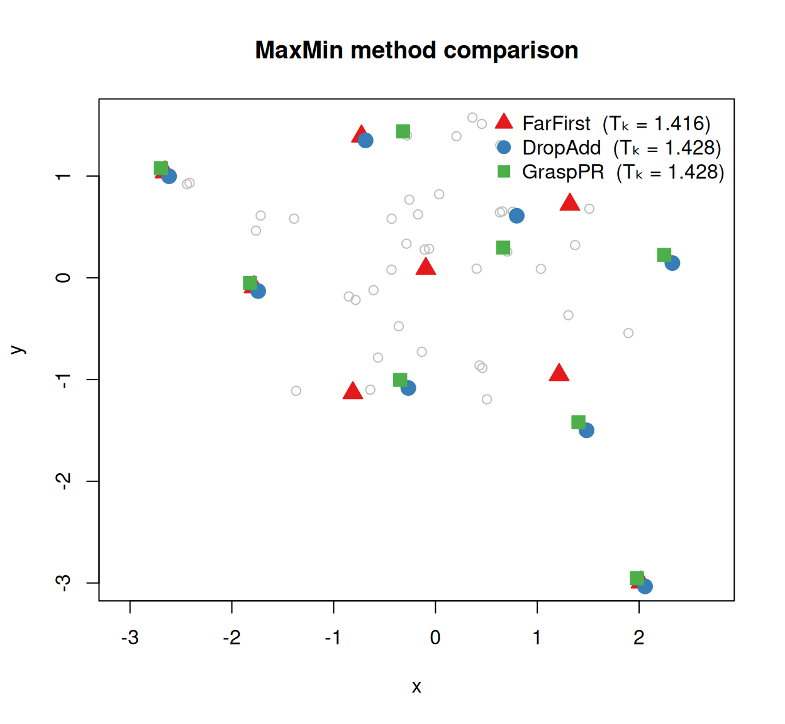

install.packages("MaxMin")The MaxMin package selects a subset that represents a fixed pool of N items, based on one of two complementary objectives:
The Max-Min Diversity Problem (MMDP, the discrete p-dispersion objective) selects \(k\) elements such that the minimum distance between any pair of selected elements is as large as possible; the chosen elements are maximally separated. This can reward selections that leave the interior of the set unrepresented.
This objective is suited to defining a representative sample from a fixed pool: picking biological specimens for sequencing that span available diversity, or choosing a representative subset of protein structures from a database.
The discrete k-centre problem selects \(k\) elements such that the maximum distance from any element in the original set to a selected element is as small as possible. In ensuring that each point has a nearby representative, this objective can select points that reflect a central compromise, rather than selections that are closer to more local points.
This objective is useful when selecting centres that represent each point in a dataset: for example, siting fire stations to guarantee that all buildings can be reached within a given response time.
An approximate selection that satisfies both objectives within a factor of two of their respective optima can be attained by a greedy farthest-first algorithm (González, 1985), though the exact optima typically differ; dispersion spreads to the extremes, whereas covering reaches into the interior. MaxMin provides approximate and exact solvers for each objective.
Installation
Quick start
Our examples employ a built-in R dist object that contains road distances (in km) between 21 European cities.
# Load the `eurodist` dist object
data("eurodist")
# Set a seed for a reproducible selection
set.seed(1)
# Select 4 maximally dispersed cities
ffPick <- FarFirst(4L, eurodist)
# View distances between selected cities
as.matrix(eurodist)[ffPick, ffPick]
#> Athens Lisbon Stockholm Milan
#> Athens 0 4532 3927 2282
#> Lisbon 4532 0 3231 2250
#> Stockholm 3927 3231 0 2187
#> Milan 2282 2250 2187 0
# Quickly extract the minimum distance for a given selection
MinDist(eurodist, ffPick)
#> [1] 2187FarFirst() returned the indices of the four cities whose nearest-neighbour distance within the selection is largest. MinDist() reports that value explicitly.
Methods at a glance
MaxMin provides solvers for each objective:
| Function | Objective | Quality | Speed | Stochastic? |
|---|---|---|---|---|
FarFirst() |
both | Good (2-approximation) | Very fast | No |
DropAdd() |
MMDP | High (≈ 99 % optimal) | Fast | No |
Grasp() |
MMDP | Highest | Moderate | Yes (set.seed()) |
ExactMaxMin() |
MMDP | Optimal (NP-hard) | Slow | No |
KCentre() |
k-centre | Near-optimal (CDSh) | Fast | No |
ExactKCentre() |
k-centre | Optimal (NP-hard) | Slow | No |
To compute the score for an arbitrary selection of points under each objective, use MinDist() (MMDP) and KCentreRadius() (k-centre).
Fast greedy selection
The González (1985) algorithm builds the selection greedily: start from a seed point, then repeatedly add whichever unselected point is farthest from the current selection. This greedy rule guarantees a 2-approximation to the optimal Tk and runs in O(N · m) time.
The choice of seed point influences the quality of the selection. Peripheral seeds are more likely than central seeds to represent extremes of the data, and hence to feature in the optimal selection. FarFirst() supports several methods for identifying starting points for the greedy search.
The default is a two-step strategy that starts from a random selects a point at random, then starts greedy search from the point furthest from
By default FarFirst() runs eight "random_furthest" starts, each of which takes a randomly selected point, moves to the point furthest from it, and begins the farthest-first sweep from there. The results of the pass with the highest Tk are returned.
The number of random starts can be configured via the nSeeds argument.
Other strategies to select peripheral seeds are available via the strategy argument; these are described at PickPoint(). The best solution from the requested strategies is used.
With large datasets of points that are not associated with natural coordinates, it may not be feasible to compute and store all N×N distances. In such cases, a distance function may take the place of the distance matrix. This function is passed one index i at a time, and must return the distance from i to each other point. N, the number of objects, must also be specified.
data("USArrests")
arrestTypes <- USArrests[, c("Murder", "Assault", "Rape")]
StateDist <- function(i) {
diffs <- sweep(arrestTypes, 2, unlist(arrestTypes[i, ]), "-")
sqrt(rowSums(diffs ^ 2))
}
idx <- FarFirst(4L, StateDist, N = nrow(arrestTypes), strategy = 1L)
arrestTypes[idx, ]
#> Murder Assault Rape
#> Alabama 13.2 236 21.2
#> North Dakota 0.8 45 7.3
#> North Carolina 13.0 337 16.1
#> Washington 4.0 145 26.2DropAdd tabu search
The DropAdd heuristic (Porumbel et al., 2011) refines an initial selection by alternately dropping and adding points from the selection; it typically reaches ≈ 99 % of the optimal Tk.
The algorithm terminates after plateau iterations do not improve Tk. Where N is too large for a distance matrix to fit in memory (roughly N > 46 000), pass a coordinate matrix via DropAdd(points = ...).
GRASP with path relinking
GRASP + path relinking (Resende et al., 2010) combines a randomised greedy construction phase with extended local search, and then refines an “elite” set of good solutions by interpolating between elite-pair trajectories (path relinking). It achieves the highest Tk of the three heuristics, at a proportionally higher cost.
set.seed(0)
grPick <- Grasp(6L, eurodist, plateau = 50L)
grPick
#> 6 elements (1 2 4 12 20 21) selected by GRASP with path-relinking, each at distance >= 1305
labels(eurodist)[grPick]
#> [1] "Athens" "Barcelona" "Calais" "Lisbon" "Stockholm" "Vienna"
attr(grPick, "pr_calls") # path-relinking calls performed
#> [1] 90plateau controls how many consecutive non-improving GRASP iterations trigger termination; maxSeconds is available as an absolute time cap.
Comparing methods on a simulated example
To see how the methods relate visually, we generate 50 points in two dimensions and select k = 8 from each.
Even a small difference in Tk can correspond to a meaningfully more dispersed selection.
Plotting the selections against the point cloud makes the differences concrete. When two methods select the same index, their symbols overlap; the Tk table above captures the quality distinction even when the visual overlap is high.
methods <- list(
FarFirst = ffPick,
DropAdd = da50Pick,
Grasp = gr50Pick
)
cols <- c(FarFirst = "#E41A1C", DropAdd = "#377EB8", Grasp = "#4DAF4A")
pchs <- c(FarFirst = 1L, DropAdd = 3L, Grasp = 4L)
plot(pts, pch = 1L, col = "grey75", asp = 1L,
xlab = "x", ylab = "y", frame.plot = FALSE,
main = "MaxMin method comparison")
for (nm in names(methods)) {
sel <- methods[[nm]]
points(pts[sel, 1L], pts[sel, 2L], pch = pchs[nm], col = cols[nm],
cex = 1.6)
}
legend("topleft",
legend = paste0(names(methods), " (T\U2096 = ", round(scores, 3), ")"),
pch = pchs, col = cols, pt.bg = cols, pt.cex = 1.4, bty = "n")
Exact solution
For small instances (roughly N ≤ 25–30), ExactMaxMin() solves the problem to proven optimality via a node-packing integer programme (Sayyady & Fathi, 2016), using the highs solver (which we must first install).
install.packages("highs")
exPick <- ExactMaxMin(6L, d30, maxSeconds = 30L)
attr(exPick, "proven") # TRUE ⟹ objective is the global optimum
#> [1] TRUE
attr(exPick, "score")
#> [1] 1.616311
# Compare to the greedy heuristic on the same instance
ff30Pick <- FarFirst(6L, d30)
c(exact = attr(exPick, "score"),
farFirst = MinDist(d30, ff30Pick))
#> exact farFirst
#> 1.616311 1.616311$proven = TRUE certifies that no selection can achieve a higher Tk. ExactMaxMin() is NP-hard; it is wise to set a time budget once the number of points exceeds ~30 candidates, or to switch to a heuristic method.
Scoring
MinDist() computes the Tk objective for any index set. It accepts a dist object, a square distance matrix, or a coordinate matrix via the points argument:
Covering: the k-centre problem
The above methods seek to spread the selection such that its members are mutually far apart. The k-centre problem instead minimizes the covering radius \(R\), the largest distance from any point to its nearest chosen centre, such that no point of the pool is left far from a representative (González, 1985; Hochbaum & Shmoys, 1985), typically resulting in selections that reach further into the interior of a sample.
Heuristic approach
FarFirst() is the quickest approximation to the K-centres problem. The CDSh algorithm implemented in KCentres() gives a more sophisticated heuristic (García-Díaz et al., 2017; García-Díaz et al., 2019); its solutions are typically within 1–3.5 % of the optimum, compared to ~10% for FarFirst().
KCentreRadius() scores any centre set by its covering radius (lower is better). CDSh covers at least as tightly as the Gonzalez 2-approximation baseline:
ff <- FarFirst(4L, eurodist, strategy = "peripheral")
c(KCentre = KCentreRadius(eurodist, centres),
FarFirst = KCentreRadius(eurodist, ff))
#> KCentre FarFirst
#> 1011 1209Like MinDist(), KCentreRadius() accepts a points coordinate matrix, allowing it to score a selection on a set of points whose distance matrix would be too large to fit in memory.
Exact solver
For small instances, ExactKCentre() finds the optimal solution, using a minimum-set-cover integer program approach akin to ExactMaxMin(), and using again the highs solver.
kc <- ExactKCentre(4L, eurodist)
kc
#> 4 centres (6 7 14 19) by exact MILP (highs), proven optimal, covering radius = 1011
attr(kc, "proven") # TRUE ⟹ radius is the global covering optimum
#> [1] TRUEThe covering optimum is sometimes attained by fewer centres (once every point is covered, extra centres cannot lower the radius); indices then has length below the requested number, and the reported radius is still the proven optimum. ExactKCentre() is NP-hard, so — like ExactMaxMin() — it is a ground-truth reference for small instances, not a scalable method.
The dispersion and covering optima differ even on this small example: dispersion selects cities at the rim of the map, while covering pulls inward to keep every city near a centre.
disp <- ExactMaxMin(4L, eurodist)
labels(eurodist)[disp] # dispersion: pushed to the extremes
#> [1] "Athens" "Lisbon" "Milan" "Stockholm"
labels(eurodist)[kc] # covering: pulled toward the interior
#> [1] "Cologne" "Copenhagen" "Madrid" "Rome"When to use which method
For dispersion (spread the selection; maximize Tk):
| Scenario | Recommended |
|---|---|
| Speed matters most |
FarFirst() (ensemble default) |
| Deterministic, good quality valued | DropAdd() |
Best quality, set.seed() for reproducibility |
Grasp() |
| N > 46 000 (distance matrix infeasible) |
DropAdd(points = ...) or FarFirst(points = ...)
|
| Arbitrary metric with no coordinate embedding | FarFirst(<column function>, N = ...) |
| Proven optimum, N ≤ ~ 25–30, highs installed | ExactMaxMin() |
| Score a selection’s Tk | MinDist() |
For covering (minimise the radius; no point far from a centre):
| Scenario | Recommended |
|---|---|
| Near-optimal covering, fast and deterministic |
KCentre() (CDSh) |
| Quick 2-approximation baseline | FarFirst(strategy = "peripheral") |
| Proven optimum, small N, highs installed | ExactKCentre() |
| Score a centre set’s covering radius (matrix-free at large N) | KCentreRadius(points = ...) |
Related problems
MaxMin selects a subset from a given set of elements. Several established packages solve neighbouring objectives:
-
k-medoids / k-median selects elements that minimize the mean distance from each element to its nearest centre. Implementations include:
-
cluster::pam(): generates the full O(N²) dissimilarity matrix, and hence caps at n ≤ 65 536; -
banditpam, a matrix-free \(O(N \log N)\) implementation restricted to coordinate data; -
cluster::clara()(PAM / FastPAM / FasterPAM); -
ClusterR::Cluster_Medoids().
-
k-means (
stats::kmeans()) selects elements so as to minimize the within-cluster sum of squares around centres that are coordinate means, not data points; as such, it applies only to Euclidean coordinates. k-means++ (TreeDist::KMeansPP()) initializes its selection using D²-weighted seeding, a randomized relative ofFarFirst()’s farthest-first traversal.maximinsolves the related design problem of adding new points at positions that maximize the minimum inter-point distance.
References
García-Díaz, J., Menchaca-Méndez, R., Menchaca-Méndez, R., Pomares Hernández, S., Pérez-Sansalvador, J. C., & Lakouari, N. (2019). Approximation algorithms for the vertex \(k\)-center problem: Survey and experimental evaluation. IEEE Access, 7, 109228–109245. https://doi.org/10.1109/ACCESS.2019.2933875
García-Díaz, J., Sánchez-Hernández, J., Menchaca-Méndez, R., & Menchaca-Méndez, R. (2017). When a worse approximation factor gives better performance: A 3-approximation algorithm for the vertex \(k\)-center problem. Journal of Heuristics, 23(5), 349–366. https://doi.org/10.1007/s10732-017-9345-x
González, T. F. (1985). Clustering to minimize the maximum intercluster distance. Theoretical Computer Science, 38, 293–306. https://doi.org/10.1016/0304-3975(85)90224-5
Hochbaum, D. S., & Shmoys, D. B. (1985). A best possible heuristic for the \(k\)-center problem. Mathematics of Operations Research, 10(2), 180–184. https://doi.org/10.1287/moor.10.2.180
Porumbel, D., Hao, J.-K., & Glover, F. (2011). A simple and effective algorithm for the MaxMin diversity problem. Annals of Operations Research, 186, 275–293. https://doi.org/10.1007/s10479-011-0898-z
Resende, M. G. C., Martí, R., Gallego, M., & Duarte, A. (2010). GRASP and path relinking for the max-min diversity problem. Computers & Operations Research, 37(3), 498–508. https://doi.org/10.1016/j.cor.2008.05.011
Sayyady, F., & Fathi, Y. (2016). An integer programming approach for solving the p-dispersion problem. European Journal of Operational Research, 253(1), 216–225. https://doi.org/10.1016/j.ejor.2016.02.026